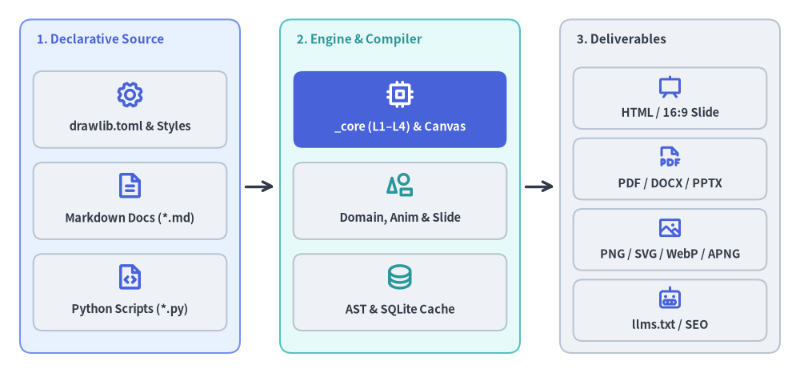
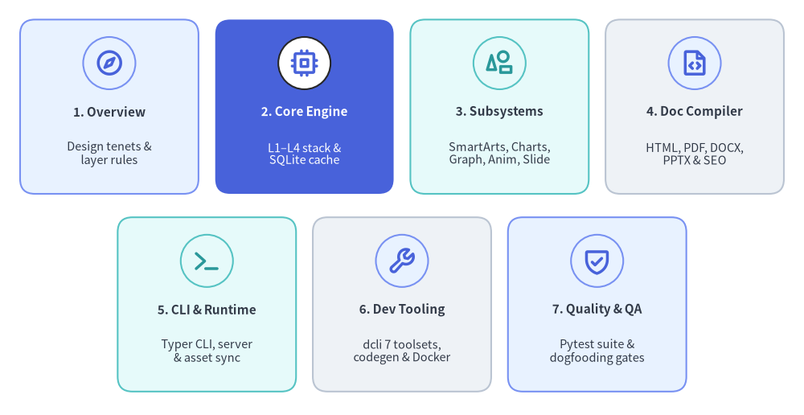

Drawlib Architecture Specification
Drawlib is a pure-Python library and compiler toolset designed for "Illustration as Code" and "Illustrated Documentation as Code". Unlike GUI diagram editors or boilerplate-heavy plotting packages, Drawlib unifies declarative Python visuals, Markdown prose, and multi-format document/slide compilers inside Git as a single source of truth.
This specification provides a complete technical breakdown of Drawlib's internal architecture, package boundaries, layered drawing engine, domain subsystems, multi-target compilers, and quality verification tooling.

Source Code
from drawlib.canvas import save, setup
from drawlib.diagrams.architecture import ArchitectureDiagram, Node, NodeGroup, PhosphorIcon
from drawlib.styles import Styles
setup(width=120, height=56)
d = ArchitectureDiagram(
node_style=Styles.PrimaryBold,
node_text_style=Styles.DarkBold.patch(text_size=10.5),
edge_style=Styles.DarkBold,
edge_text_style=Styles.Dark.patch(text_size=10.0),
node_card_style=Styles.Neutral.patch(shape_r=1.4),
)
# 1. Declarative Source
g_src = d.add(
NodeGroup(
title="1. Declarative Source",
width=33.0,
height=50.0,
style=Styles.PrimaryNeutral.patch(shape_r=1.8, shape_line_style="solid"),
text_style=Styles.PrimaryBold.patch(text_size=11.0, halign="left", valign="top"),
),
xy=(3.0, 3.0),
)
g_src.add(Node("drawlib.toml & Styles", width=29.0, height=11.5, icon=PhosphorIcon.GEAR, icon_size=4.4), xy=(16.5, 36.5))
g_src.add(Node("Markdown Docs (*.md)", width=29.0, height=11.5, icon=PhosphorIcon.FILE_TEXT, icon_size=4.4), xy=(16.5, 22.8))
g_src.add(Node("Python Scripts (*.py)", width=29.0, height=11.5, icon=PhosphorIcon.FILE_CODE, icon_size=4.4), xy=(16.5, 9.1))
# 2. Drawlib Engine & Compiler
g_eng = d.add(
NodeGroup(
title="2. Engine & Compiler",
width=36.0,
height=50.0,
style=Styles.SecondaryNeutral.patch(shape_r=1.8, shape_line_style="solid"),
text_style=Styles.SecondaryBold.patch(text_size=11.0, halign="left", valign="top"),
),
xy=(42.0, 3.0),
)
g_eng.add(
Node(
"_core (L1–L4) & Canvas",
width=32.0,
height=11.5,
icon=PhosphorIcon.CPU,
icon_size=4.4,
style=Styles.WhiteBold,
text_style=Styles.WhiteBold.patch(text_size=10.5),
card_style=Styles.PrimaryFlat.patch(shape_r=1.4),
),
xy=(18.0, 36.5),
)
g_eng.add(
Node(
"Domain, Anim & Slide",
width=32.0,
height=11.5,
icon=PhosphorIcon.SHAPES,
icon_size=4.4,
style=Styles.SecondaryBold,
),
xy=(18.0, 22.8),
)
g_eng.add(
Node(
"AST & SQLite Cache",
width=32.0,
height=11.5,
icon=PhosphorIcon.DATABASE,
icon_size=4.4,
style=Styles.SecondaryBold,
),
xy=(18.0, 9.1),
)
# 3. Multi-Target Deliverables
g_out = d.add(
NodeGroup(
title="3. Deliverables",
width=33.0,
height=50.0,
style=Styles.Neutral.patch(shape_r=1.8, shape_line_style="solid"),
text_style=Styles.DarkBold.patch(text_size=11.0, halign="left", valign="top"),
),
xy=(84.0, 3.0),
)
g_out.add(Node("HTML / 16:9 Slide", width=29.0, height=9.2, icon=PhosphorIcon.PRESENTATION, icon_size=3.8), xy=(16.5, 38.2))
g_out.add(Node("PDF / DOCX / PPTX", width=29.0, height=9.2, icon=PhosphorIcon.FILE_PDF, icon_size=3.8), xy=(16.5, 27.6))
g_out.add(Node("PNG / SVG / WebP / APNG", width=29.0, height=9.2, icon=PhosphorIcon.IMAGE, icon_size=3.8), xy=(16.5, 17.0))
g_out.add(Node("llms.txt / SEO", width=29.0, height=9.2, icon=PhosphorIcon.ROBOT, icon_size=3.8), xy=(16.5, 6.4))
d.connect(g_src, g_eng, routing="direct", padding=0.8)
d.connect(g_eng, g_out, routing="direct", padding=0.8)
d.draw(xy=(0.0, 0.0))
save()
1. Concept: Architecture as Code & Zero Documentation Drift
Traditional software architecture diagrams suffer from chronic fragmentation. Engineers sketch topologies in external GUI editors (Visio, draw.io, Miro) and paste static bitmap screenshots into wikis or slide decks. As the system evolves, visual documentation drifts out of sync with the codebase and becomes misleading.
Drawlib eliminates documentation drift through three foundational tenets:
- Pure Python as the Authoring Medium: Every illustration is an executable Python script governed by validated Pydantic style models. Visual components, design tokens, and layout coordinates live in Git alongside application code and undergo standard code review.
- Headless Rendering & Managed Browser Export: Static and animated canvas rendering (
PNG,SVG,WebP,APNG) executes 100% in-memory via Matplotlib's headlessAggbackend and Pillow—requiring zero display servers (X11/Wayland), Graphviz binaries, or Node.js runtimes. For paginated print deliverables (build pdf) and live DOM slide geometry measurement (build pptx), Drawlib orchestrates a managed headless Playwright Chromium instance (_builder/_common/browser.py) paired with pure-Python OpenXML writers (python-docx,python-pptx). - Single-Source Multi-Target Compilation: Markdown sources (
*_src/<lang>/*.md) embed executabledrawlibPython blocks and layout directives. A single build compiles multi-page HTML portals, linear Markdown, 16:9 HTML slide decks (drawlib.slide), vector PDFs, Microsoft Word.docxdocuments, Microsoft PowerPoint.pptxpresentations, and SEO / AI crawler artifacts (sitemap.xml,robots.txt,llms.txt).
2. Positioning: The Seven Architectural Pillars
Drawlib's library codebase (src/drawlib/) and engineering workspace (tools/dcli/, tests/) are organized into seven cohesive architectural pillars:

Source Code
from drawlib.canvas import save, setup
from drawlib.icons import phosphor
from drawlib.smartarts import CardList
from drawlib.styles import Styles
setup(width=120, height=62)
# Top Row: Pillars 1–4 (4 equal cards across width=114.0 -> card_w = 26.625)
row_top = CardList(
style=Styles.Neutral,
text_style=Styles.DarkBold.patch(text_size=11.0),
description_style=Styles.Dark.patch(text_size=10.5),
badge_shape="circle",
badge_style=Styles.PrimaryNeutral,
icon_style=Styles.PrimaryBold,
direction="horizontal",
spacing=2.5,
)
row_top.add(
"1. Overview",
"Design tenets &\nlayer rules",
icon=phosphor.compass,
style=Styles.PrimaryNeutral,
)
row_top.add(
"2. Core Engine",
"L1–L4 stack &\nSQLite cache",
icon=phosphor.cpu,
style=Styles.PrimaryFlat,
text_style=Styles.WhiteBold.patch(text_size=11.0),
description_style=Styles.White.patch(text_size=10.5),
badge_style=Styles.White,
icon_style=Styles.PrimaryBold,
)
row_top.add(
"3. Subsystems",
"SmartArts, Charts,\nGraph, Anim, Slide",
icon=phosphor.shapes,
style=Styles.SecondaryNeutral,
badge_style=Styles.SecondaryNeutral,
icon_style=Styles.SecondaryBold,
)
row_top.add(
"4. Doc Compiler",
"HTML, PDF, DOCX,\nPPTX & SEO",
icon=phosphor.file_code,
style=Styles.Neutral,
)
row_top.draw(xy=(3.0, 33.0), width=114.0, height=26.0)
# Bottom Row: Pillars 5–7 (3 cards centered with matching card_w = 26.625 -> width = 84.875)
row_bot = CardList(
style=Styles.Neutral,
text_style=Styles.DarkBold.patch(text_size=11.0),
description_style=Styles.Dark.patch(text_size=10.5),
badge_shape="circle",
badge_style=Styles.PrimaryNeutral,
icon_style=Styles.PrimaryBold,
direction="horizontal",
spacing=2.5,
)
row_bot.add(
"5. CLI & Runtime",
"Typer CLI, server\n& asset sync",
icon=phosphor.terminal,
style=Styles.SecondaryNeutral,
badge_style=Styles.SecondaryNeutral,
icon_style=Styles.SecondaryBold,
)
row_bot.add(
"6. Dev Tooling",
"dcli 7 toolsets,\ncodegen & Docker",
icon=phosphor.wrench,
style=Styles.Neutral,
)
row_bot.add(
"7. Quality & QA",
"Pytest suite &\ndogfooding gates",
icon=phosphor.shield_check,
style=Styles.PrimaryNeutral,
)
row_bot.draw(xy=(60.0, 16.5), width=84.875, height=26.0, align="center")
save()
| Pillar | Specification Chapters | Scope & Key Subsystems |
|---|---|---|
| 1. Overview & Architecture | System Architecture · Layer Hierarchy | Architectural vision, 20 lazy public submodules, and strict unidirectional dependency laws (l1_core through l4_canvas). |
| 2. Core Engine | Canvas & Geometry · Types & Style Models · Cache & AST Engine | Cartesian coordinate plane, 4-mode anchor geometry, 10-mixin Canvas MRO, guarded Style models, and < 1ms SQLite AST caching (.drawlib/cache.db). |
| 3. Domain Subsystems | Primitives & Backends · High-Level Components · Graph Auto-Layout · Animation & Slide Engines | 43 shapes, 34 icon suites, 18 SmartArts, 9 Charts, 6 Diagrams, 5 Graph layout solvers, multi-frame drawlib.anim (WebP/APNG), and 16:9 drawlib.slide (HTML/PDF/.pptx). |
| 4. Doc Builder & Compiler | Compilation Pipeline · Multi-Target Exporters · Link & Quality Scanner | markdown-it-py compilation, multi-locale [i18n] routing, HTML/Markdown/PDF/.docx/.pptx exporters, sitemap.xml/robots.txt/llms.txt generation, and link validation. |
| 5. CLI & Runtime | CLI Architecture · Preview Server & Assets | Typer CLI (init, build, show, serve, cache, rules), zero-dependency HTTP preview server, and on-demand font/icon/Chromium asset caching. |
| 6. Developer Tooling | dcli Orchestrator · Code Generation & Assets · Publishing & Docker | Unified ./dcli developer CLI (code-check, test, docs, codegen, release-assets, pypi, docker), icon binding generators, and clean-room container verification. |
| 7. Test Architecture & QA | Test Hierarchy & Strategy · Dogfooding & Quality Gates | Headless Agg unit/integration tests, 1:1 source-to-test mirroring, Ruff/Ty/docstring static analysis, and live repository dogfooding across 5 docs_src/ projects. |
3. Details: Specification Structure & Navigation
Every chapter in this specification follows a consistent three-section engineering format:
- Concept: Architectural motivation, mental models, and design trade-offs.
- Positioning in Architecture: Exact placement within the L1–L4 / Domain / Compiler hierarchy, dependency boundaries, and upstream/downstream contracts.
- Implementation Details: Concrete internal modules, class hierarchies, state machines, coordinate mathematics, and execution paths verified against
src/drawlib/.
To begin exploring, proceed to System Architecture or inspect the Layer Hierarchy.